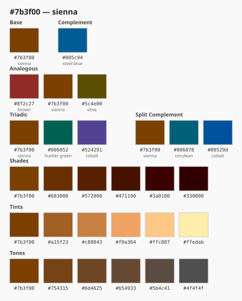
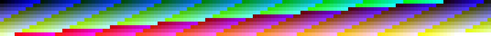

A deterministic perceptual colour engine. Full 24-bit RGB universe. LAB naming. LCH relationships. Multi-format exports. Cryptographic receipts.
v1.0.0 pure FARD — no FFI — no native deps

Every output is cryptographically receipted. Same inputs always produce the same digests.
| Operation | Scale | Time |
|---|---|---|
| Full RGB traversal | 16,777,216 colours | 41m49s |
| PPM export (K=255) | 171MB streamed | 41m49s |
| Catalogue generation | K=10, 1,331 colours | 1m6s |
| Relationship sheet | 1 hex, SVG out | <1s |
| colorbrain explain | 1 hex, full profile | <1s |
Colour-in-Fard is a deterministic perceptual colour engine where every colour
result is reproducible, named, related, exported, and cryptographically receipted.
It does not approximate. It does not depend on native libraries, system colour
profiles, or floating-point non-determinism from external code. Every output
is derived from first principles: sRGB gamma, D65 illuminant, CIELAB cube root,
LCH cylindrical projection. The math is in the repo. The receipts prove it ran.
At K=255 it covers the entire 24-bit RGB space — 16,777,216 colours — the full
universe of colour a standard display can show. Each one is named, related,
and exportable. That is what exceeding Pantone looks like from first principles.